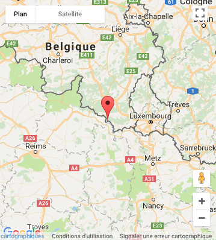

Historique
Les premiers moines à s'installer à Orval arrivèrent du sud de l'ltalie en 1070. Le seigneur de l'endroit, le comte Arnould de Chiny, les accueillit et leur donna des terres prélevées sur son domaine. L'église et les bâtiments conventuels furent aussitôt mis en chantier. Pour des motifs que nous ignorons, ces pionniers se retirèrent après une quarantaine d'années. Othon, fils d'Arnould, les remplaça alors par une petite communauté de chanoines qui put mener à bonne fin les constructions entreprises par leurs prédécesseurs; en 1124, I'église achevée était consacrée par Henri de Winton, évêque de Verdun. Mais les chanoines connurent bientôt des difficultés d'ordre économique. Ce qui les poussa à solliciter leur rattachement à l'Ordre de Cîteaux, alors en pleine expansion. Leur demande fut transmise à saint Bernard, qui accepta, et confia la reprise d'Orval à l'aînée de ses maisons-filles, l'abbaye de Trois-Fontaines en Champagne.
Le 9 mars 1132, sept moines cisterciens arrivèrent à Orval, avec à leur tête Constantin. Moines et chanoines s'unirent en une seule communauté, et s'employèrent aussitôt à adapter les bâtiments aux usages cisterciens. La nouvelle église fut achevée avant 1200.
Les cisterciens veillèrent aussi à créer un domaine agricole et forestier, dont l'exploitation leur permettrait de vivre selon leurs observances. Les terres qui entourent immédiatement le monastère sont pauvres et ne conviennent pas à la culture. Dès 1132, les religieux reçurent un petit domaine à une vingtaine de kilomètres de chez eux, à proximité de Carignan ; ce devait être le noyau de leur plus belle "grange", celle de Blanchampagne. Au cours des années qui suivirent, ils reçurent d'autres terres en donation. Parmi elles, il convient de mentionner le groupe de Buré-Villancy, en Meurthe-et-Moselle, qui sera le centre de l'industrie du fer des moines d'Orval.
Durant cinq siècles, Orval ne connut qu'une existence effacée, semblable à celle de beaucoup de monastères de l'Ordre. Pendant le 12e siècle, I'abbaye paraît avoir été prospère ; dès le milieu du siècle suivant, les calamités seront souvent son lot pour de longues périodes. Elle fut ravagée vers 1252 par un incendie dont les conséquences pesèrent sur la communauté pendant près d'un siècle. Certains bâtiments durent être entièrement reconstruits. La misère fut même un moment si grave que les autorités de l'Ordre de Cîteaux allèrent jusqu'à envisager la suppression du monastère.
Types de bières et leurs caractéristiques
L'Orval n'est conditionné qu'en bouteille de 33 cl bien qu'une bouteille de collection de 3 litres ait vu le jour en 2008. Il existe cependant une deuxième bière, la bière de table des moines titrant 4,5 %, appelée « bière verte » parce qu’historiquement elle était embouteillée en bouteilles vertes. Aujourd'hui, on parle de Petit Orval. Il a un goût plus fruité mais moins prononcé que le premier puisqu’il ne subit qu'une fermentation. Il sert à l'usage domestique des moines et de la communauté et n'est disponible pour le grand public qu'à la brasserie de l'abbaye "À l'Ange Gardien", située à 250 m de l'abbaye. Il est alors servi au fût et disponible en deux volumes dans un verre à l'inscription verte avec à l'opposé deux ailes d'ange ainsi que le symbole de la truite et de l'anneau repris sur le pied.
Fabrication
L'Orval est brassé à partir de malt pâle et d'une faible proportion de malt caramélisé. Dans le moût froid est ajouté du sucre candi liquide. La première fermentation est faite avec des levures de type saccharomyces. Il est ensuite muri environ deux semaines dans des tanks de garde. Une deuxième sorte de levure est ensuite ajoutée (de type levure à fermentation spontanée) apportant la touche acide à l'Orval. C'est également à cette étape que sont ajoutés des houblons frais infusés (houblonnage à cru). Du sucre candi et des levures sont enfin ajoutés avant l'embouteillage afin de préparer la refermentation en bouteille.
Localisation
|  |
|